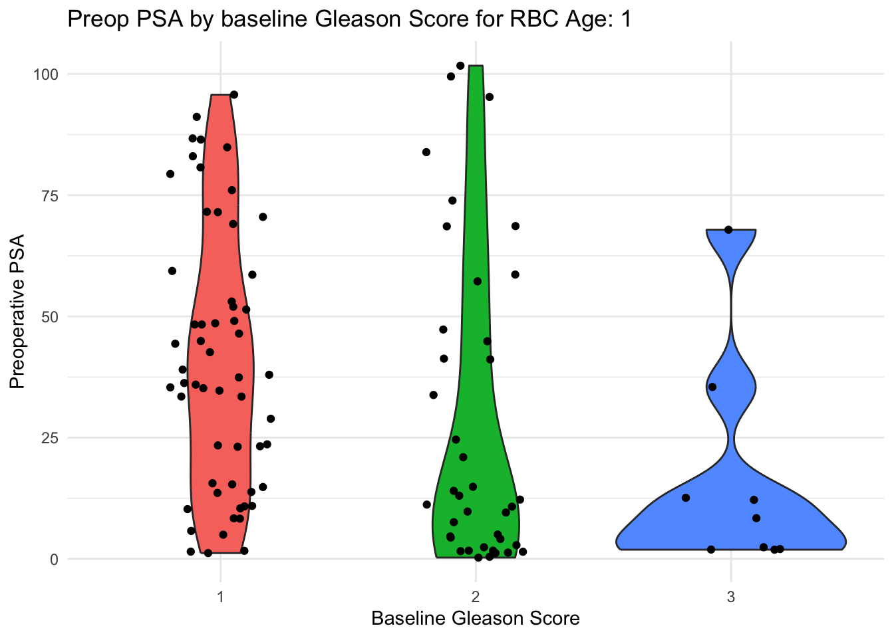

Chapter 25 Functions
Nearly everything in R and the tidyverse is built on functions. Every command you write that ends with parentheses is a function. The parentheses contain arguments (unless you just use the defaults), which the function acts upon.
If you type a function into the console and forget the parentheses, you may be surprised at what you get back when you press the Enter key. Try this with the sd function by running the chunk below
sdAt first this looks like computer gobbledygook, but if you look at it closely, the first line sets up the structure of the function and its arguments, and the second line defines the function as the square root of the variance of a vector that contains numbers. You are seeing the inner workings of the sd function.
Other functions may be written in other languages (like C++) for more speed, but you can use R to write more R functions. When you try this for another function, like filter in the dplyr package, it is less informative. As you can see when you unpack the function below.
dplyr::filter25.1 Don’t repeat yourself
Functions are especially helpful when you do something repeatedly, or do the same thing on several variables or several datasets. Let’s start with a simple plot of Ct (COVID viral load) vs age for inpatients. Run the code chunk below.
covid %>%
filter(patient_class == "inpatient") %>%
ggplot() +
aes(x = age, y = ct_result) +
geom_point() +
theme_linedraw() +
labs(y = "viral load (in Ct)",
title = "Patient class: inpatient")
This is great, but you would like a similar plot for ER patients, observation patients, outpatients, etc. How do you do this without multiple copy-paste and careful edits of the key variables (often with errors)?
First, you need to avoid hard-coding the specific values that change from plot to plot.
In our next version of this plot, we will set an envronment variable (patient_class_choice_env) to “inpatient”, then use that variable to:
- filter the data
- set the title (using the glue function)
patient_class_choice_env = "inpatient"
covid %>%
filter(.data$patient_class == .env$patient_class_choice_env) %>%
ggplot() +
aes(x = age, y = ct_result) +
geom_point() +
theme_linedraw() +
labs(y = "viral load (in Ct)",
title = glue("Patient class: {patient_class_choice_env}"))
The use of variable pronouns is very important in the filter step.
.data$patient_class means the variable “patient_class†in the currently in-use dataframe.
.env$patient_class_choice_env means the variable “patient_class_choice_env†in the current environment (check the Environment pane).
This can be especially helpful when these variables have the same names - the .data pronoun helps you refer specifically to variables in the dataframe, and the .env pronoun helps you refer specifically to variables in the environment.
It is usually better to give these slightly different names. In this case, I have added the suffix, “choice_env†for the variable in the environment in which I have specified the value chosen.
Let’s try another example.
In the code chunk below, edit the patient_class_choice_env variable to the value “emergency”, and then run the code chunk.
patient_class_choice_env = "emergency"
covid %>%
filter(.data$patient_class == .env$patient_class_choice_env) %>%
ggplot() +
aes(x = age, y = ct_result) +
geom_point() +
theme_linedraw() +
labs(y = "viral load (in Ct)",
title = glue("Patient class: {patient_class_choice_env}"))
Fairly slick, right? You can edit and run through each value for patient_class.
But what if you want to automate this, and just produce all the plots for all the possible values?
To do this, you have to turn your plot into a function.
To make a function, you first need a chunk of code with no hard-coded values.
Then, you wrap the code in curly braces, and preface it with “function(arguments)”
Then you assign it to a function name.
Examine, then run the example below.
make_covid_plot <- function(patient_class_choice_env) {
covid %>%
filter(.data$patient_class == .env$patient_class_choice_env) %>%
ggplot() +
aes(x = age, y = ct_result) +
geom_point() +
theme_linedraw() +
labs(y = "viral load (in Ct)",
title = glue("Patient class: {patient_class_choice_env}"))
}
make_covid_plot("recurring outpatient")
Note that this creates a function object named make_covid_plot in your Environment pane.
And you still have to call the function with the argument “recurring outpatient†to get one plot.
Generally, you should write functions when you find yourself copy-pasting the same code several times.
Each function should be no more than 20-30 lines. If longer, break it up into a couple of functions.
You can do this repeatedly, over several values for patient_class. Try this below by editing the code chunk to make plots for “emergency†and “not applicable†patient classes.
make_covid_plot("outpatient")
make_covid_plot("observation")
This is better, but it is still not completely automated.
Let’s automate calling the function over several values with the map function.
map takes each element of the vector patient_class and uses it as input for make_covid_plot().
map returns a list of created plots.
We can return these with bracket references to items 1,2, and 3 in the list.
patient_class <- c("emergency", "inpatient", "observation")
plots <- map(patient_class, make_covid_plot)
plots[[1]]
plots[[2]]
plots[[3]]
We can make this simpler with the walk function.
The walk function is like map, but it does not return values, only side effects (like printing). In this case, it is applying the print function to each element of the plots list.
walk(plots, print)


We can automate this further, and not need to supply the vector of patient_class values. We can automate it by applying the make_covid_plot function to all available patient_class values.
To demonstrate this, we need a more general function, with 2 arguments: one for the dataset, and one for for patient_class.
We will test this on the “inpatient†class.
The filtering operation will be moved outside of the function
make_covid_plot_2 <- function(data, patient_class) {
data %>% # note data argument
# filtering now done outside of function
ggplot() +
aes(x = age, y = ct_result) +
geom_point() +
theme_linedraw() +
labs(y = "viral load (in Ct)",
title = glue("Patient class: {patient_class}"))
}
data_inpatient <- covid %>%
filter(patient_class == "inpatient")
make_covid_plot_2(data_inpatient,
patient_class = "inpatient")
Now we can try this in a tidy pipeline.
We will first subset the data by nesting it with the nest function. Take a look at what this does
covid %>%
nest(data = -patient_class)## # A tibble: 5 × 2
## patient_class data
## <chr> <list>
## 1 observation <tibble [28 × 16]>
## 2 outpatient <tibble [65 × 16]>
## 3 emergency <tibble [124 × 16]>
## 4 recurring outpatient <tibble [11 × 16]>
## 5 inpatient <tibble [111 × 16]>We have essentially grouped the data in to 5 distinct tibbles (dataframes) in the list-column named data.
These are dataframes in a column nested inside of a larger dataframe.
Now we can make a plot from each of these smaller dataframes, using the mutate function and the map function, and our original make_covid_plot function.
covid %>%
nest(data = -patient_class) %>%
mutate(plots = map(patient_class, make_covid_plot)) ## # A tibble: 5 × 3
## patient_class data plots
## <chr> <list> <list>
## 1 observation <tibble [28 × 16]> <gg>
## 2 outpatient <tibble [65 × 16]> <gg>
## 3 emergency <tibble [124 × 16]> <gg>
## 4 recurring outpatient <tibble [11 × 16]> <gg>
## 5 inpatient <tibble [111 × 16]> <gg>Now we have a column that contains the plots.
We can pull these out of the dataframe into a vector with the pull function (because walk works on vectors), then print them to the Plots tab with the walk function.
covid %>%
nest(data = -patient_class) %>%
mutate(plots = map(patient_class, make_covid_plot)) %>%
pull(plots) %>%
walk(print)


Note that we could also walk the ggsave function if we wanted to save these plots as tiffs or pdfs or png files.
We can use our more generalizable function make_covid_plot_2 in this pipeline if we use map2, which is like map, but for functions with 2 arguments. The arguments of the map2 function include the two arguments (data, patient_class) for making plots, and then the function (make_covid_plot_2).
covid %>%
nest(data = -patient_class) %>%
mutate(plots = map2(data, patient_class, make_covid_plot_2)) %>%
pull(plots) %>%
walk(print)


This version of the pipeline will automatically process all patient classes in the dataset, whatever they are called, without us having to specify them.
25.2 Your Turn
Let’s look at how to do this with the prostate dataset. We will start with a simple violin and jitter plot of time to recurrence by baseline Gleason score (bgs), in the subgroup where rbc_age_group = 1.
rbc_age_group = 1
prostate %>%
filter(rbc_age_group == 1) %>%
ggplot() +
aes(x = bgs,
y = time_to_recurrence,
fill = bgs) +
geom_violin() +
geom_jitter(width = 0.2) +
theme_minimal() +
theme(legend.position = "none") +
labs(x = "Baseline Gleason Score",
y = 'Time to Recurrence',
title = glue("Preop PSA by baseline Gleason Score for RBC Age: {rbc_age_group}"))
We would like to make this plot for each level of rbc age (rbc_age_group).
Let’s walk through the process of how to build this into a function, and how to map it across all the values of rbc_age_group.
First, let’s avoid hard-coding the value for rbc_age_group.
Use .data$var for a variable in a column,
and .env$var for an environment variable.
Edit both sides of logic test in the filter statement in the code chunk below to eliminate hard coding the filter variable and the filter value.
Then, check that this works for other values by changing the rbc_age_group environmental variable value to 2 or 3.
rbc_age_group = 1
prostate %>%
filter(rbc_age_group == 1) %>%
ggplot() +
aes(x = bgs,
y = time_to_recurrence,
fill = bgs) +
geom_violin() +
geom_jitter(width = 0.2) +
theme_minimal() +
theme(legend.position = "none") +
labs(x = "Baseline Gleason Score",
y = 'Preoperative PSA',
title = glue("Preop PSA by baseline Gleason Score for RBC Age: {rbc_age_group}"))
Now make this into a function, named make_plot. Edit the chunk below to turn it into a function by
- wrapping the code in curly braces on the preceding and following line
- prefacing the first curly brace with function(argument) - in this case, the argument will be rbc_age_group.
- assigning the function to the name make_plot
Then run make_plot(1)
rbc_age_group = 1
{
prostate %>%
filter(.data$rbc_age_group == .env$rbc_age_group) %>%
ggplot() +
aes(x = bgs,
y = time_to_recurrence,
fill = bgs) +
geom_violin() +
geom_jitter(width = 0.2) +
theme_minimal() +
theme(legend.position = "none") +
labs(x = "Baseline Gleason Score",
y = 'Preoperative PSA',
title = glue("Preop PSA by baseline Gleason Score for RBC Age: {rbc_age_group}"))
}Now, let’s automate calling the function, with a vector of the values of rbc_age_group, and running the function over each of these with map(vector, function).
Edit the vector and function in the code chunk below to use the map function to create a list of plots.
Hint - the vector is provided, and your new function name is make_plot.
When it is working, simplify the plots1-3 by replacing them with walk(plots, print)
rbc_age_group = 1:3
plots <- map(vector, func)
plots[[1]]
plots[[2]]
plots[[3]]Now let’s make this a more generalized function with 2 arguments - data, and rbc_age_group.
Edit the code chunk below to create a new function, make_plot2. Remember to:
- wrap the code in curly braces on the preceding and following line
- preface the first curly brace with function(arguments) - in this case, the arguments will be data, rbc_age_group.
- assigning the function to the name make_plot2
- Remove the filter step
- Replace the filter step with a separate (outside the function) filter step to filter for rbc_age_group ==1, that saves the result to data_prostate_1
- Then run make_plot2
rbc_age_group = 1
make_plot2 <- function(arg1, arg2){
prostate %>%
filter(.data$rbc_age_group == .env$rbc_age_group) %>%
ggplot() +
aes(x = bgs,
y = time_to_recurrence,
fill = bgs) +
geom_violin() +
geom_jitter(width = 0.2) +
theme_minimal() +
theme(legend.position = "none") +
labs(x = "Baseline Gleason Score",
y = 'Preoperative PSA',
title = glue("Preop PSA by baseline Gleason Score for RBC Age: {rbc_age_group}"))
}
data_prostate_1 <- prostate %>% filter(rbc_age_group == 1)
make_plot2(data_prostate_1, rbc_age_group = 1)Now let’s try to use make_plot in a tidy pipeline in the chunk below. In the chunk below, you want to nest the data by rbc_age_group,
and map the make_plot function over the values of rbc_age_group.
Edit both of the var values in the code chunk below to rbc_age_group.
Run it to see the nested tibbles and nested plots in your new dataframe.
prostate %>%
nest(data = -var) %>%
mutate(plots = map(var, make_plot))Now pull out the plots and print them with pull and walk by editing the code chunk below. Pipe this code into the pull and walk functions by adding two lines of code. Remember that the argument for pull is the plotscolumn. Remember that the argument for walk is the print function.
prostate %>%
nest(data = -rbc_age_group) %>%
mutate(plots = map(rbc_age_group, make_plot))Now let’s make this even more generalizable with the make_plot2 functiion, which has 2 arguments, for data and rbc_age_group.
Edit the code chunk below to replace arg1 with the data column, and func with make_plot2. See if this runs
prostate %>%
nest(data = -rbc_age_group) %>%
mutate(plots = map2(arg1, rbc_age_group, func)) %>%
pull(plots) %>%
walk(print)This version of the pipeline should run for all values of rbc_age_group.
25.3 Freestyle
Now try this on your own - and use the outline mode to jump back and forth to previous code chunks to make this easier.
NOTE - need to FIX, Infert REMOVED 1. Make a plot of age (on the y axis) vs by parity (x axis) in the infert dataset with violin and jitter plots, as in the prostate example prostate-plot-1. This should be filtered for education == “0-5yrs”. Edit to make appropriate axis labels as appropriate. 2. Make a non-hard-coded version, by editing the filter statement with .data and .env variables, and edit the title with glue as in prostate-plot-2. 3. Make this into a function, make_infert_plots, as in prostate-plot-3. Try this with different values for education. 4. Set the levels of education with a vector as in prostate-plot 4, make plots with the map function, and print these out, with the walk function 5. Now make a more generalizable function, make_infert_plots2, by adding a data argument, as in prostate-plot-5. 6. Now nest the data by education, and mutate up some plots with make_infert_plots, as in prostate-plot-6 7. Then pull these plots and print them out with walk, as in prostate-plot-7 8. Now make a nested and generalizable version for all values of education, using your make_infert_plots2 function, as in prostate-plot-8
25.3.1 Acknowledgement
This chapter is inspired by a lesson from Claus Wilke at https://wilkelab.org/SDS375/slides/functional-programming
25.4 Read More
More on these topics can be found in
R for Data Science - Chapter 19: Functions
R for Data Science - Chapter 21.5: Map Functions
Purrr::map documentation
A blog post on how to use purrr:map to make plots for all 50 states and put them into a powerpoint presentation.